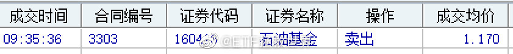

回复@锅边糊6000244828:计划长期持仓不动收益率37%。稍微做点波段收益率超过50%。我本人收益率就不说了。不好意思，让你失望了，拉黑。//@锅边糊6000244828:亏了多少走的？@ETF拯救世界:这是闹哪样。不说那么多先走一波。 
回复@collin87:这是计划里面长期持有的石油基金。由于溢价过大，我卖的时候溢价18%，没有理由不卖。跌落后溢价回归正常，再买回来。这不是网格。//@collin87:不懂就问。不是在华宝油气上做网格吗？不是说相关性太强的品种选一个就可以了吗？@ETF拯救世界:这是闹哪样。不说那么多先走一波。
你的有效和成功经验越多，就会越淡定。为什么界定有效和成功？因为无效的，失败的经验完全无用。当你非常明白，清楚的经历过波动，并且不断取得成功，原来模糊，怀疑的东西开始清晰，坚定，你就level up。如果在波动中，陷入惊慌，迷茫，完全不懂为什么会这样，发生了又该如何应对，那么一次次的失败带给你的只会是抱怨、苦闷。失败的烙印打在身上，完全找不到正确的方向，最终在下一次波动中继续失败。潮起潮落后，花开花落时，你只会记得一句话：踏踏实实的，多大点事儿啊。
太准了吧！ 查看图片@ETF拯救世界:送个贴士给你们：如果你看到某人因为某个品种骂我或者嘲笑我，那么那个品种极大概率已经是底部区域了。根据过去几年的观察，这个策略成功率大概86个巴仙。如果是大v骂我，则成功率上升至98.385个巴仙。